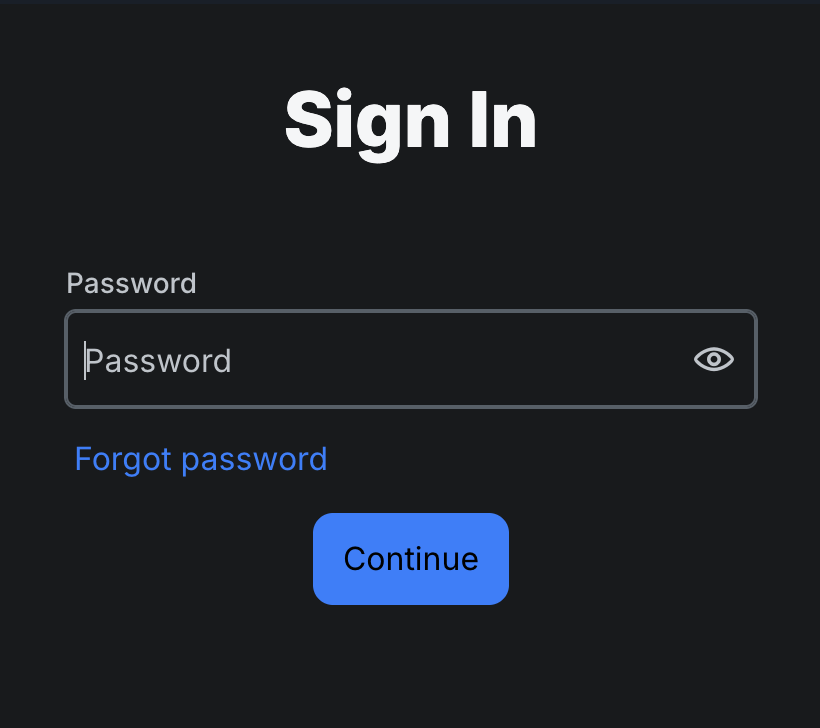
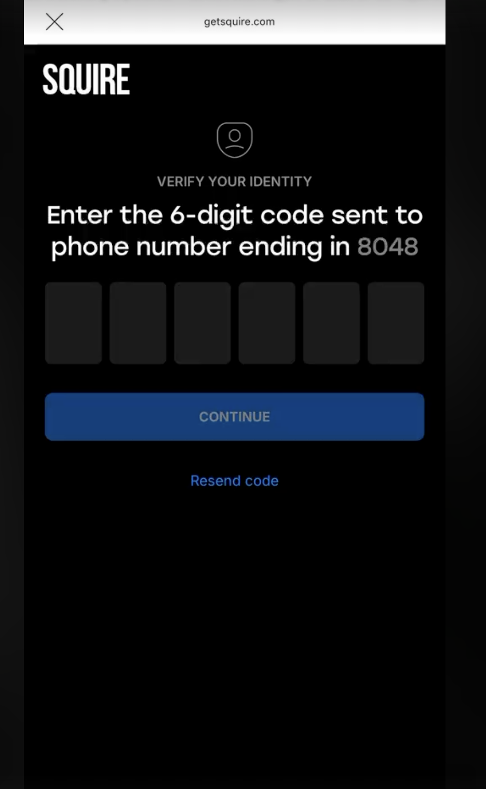

We recommend shipping Flow B.
Configure Descope as Flow B.
13 days of clean post-rollout data. Flow B wins on every metric that matters to users. Drop in accidental signups is confirmed by support tickets (the ground truth).


Flow B converts 52.6% of users vs 45.9% for Flow A. More users get to first value.
Flow A users tap forgot-password 2x more often. Persistent UX issue, gap kept widening.
From ~12/wk before deploy to ~5/wk after. Support tickets confirm: 0 accidental cancellations in May.
Verification gap on signup.
An indie barber account can be created today without phone or email being verified. Proposal: gate account creation behind verification.


- If a user tries to log in with an unverified account, redirect them to verification.
- Don't create the barber entity until required verifications pass — keep them as a temporary user only.
- That temporary user expires if they never verify (can't sit forever).
- Backend already supports both (
phoneVerified+emailVerifiedcolumns in squire-api since Dec 2024). The question is what we choose to enforce on signup.
Discussion · what do we gate on?
Three scenarios on the table:
Phone required at signup (per SQR-12354). Email managed in settings, never blocks the account.
Pro: matches the incident root cause (phone abuse). Backend PR already merged.
Email required to create the barber account. Phone added later in settings, only when the user wants to send SMS.
Pro: lower friction to first value. Phone gates the abusable surface (SMS) directly.
Phone AND email required before the barber entity is created. Nothing happens until both are verified.
Pro: closes both holes at once. Con: higher signup friction.